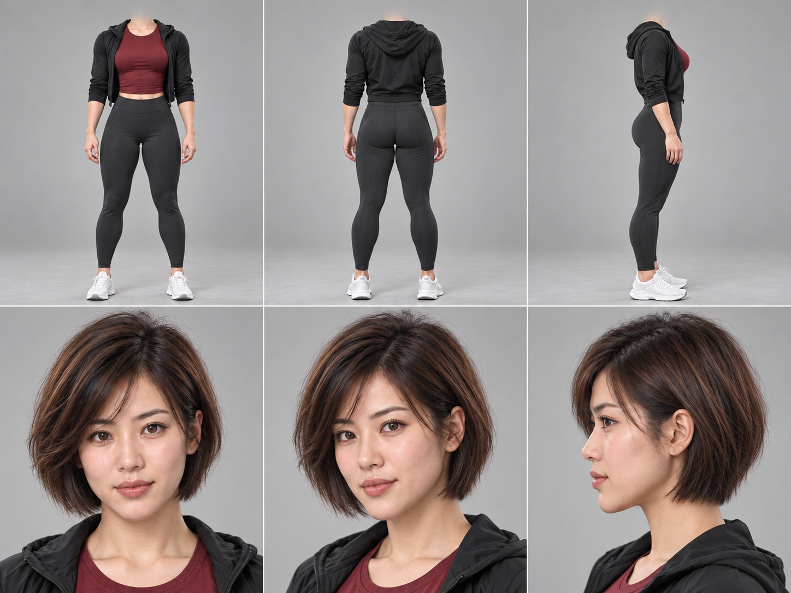
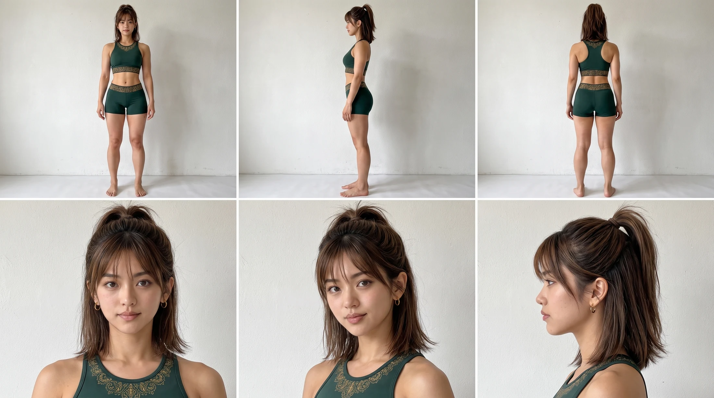

免费课程Bobby × VIGOR 商品短片拆解
课程目录
两章，各自解决一个问题
画面很好看，
为什么还不能直接卖产品？
跟着 Bobby 的无牌瑜伽展示旧案与 VIGOR 商品案例，核对商品事实、分配参考图、检查生成错误，再把片子修订成信息清楚的商品短片。含三条完整影片、制作对照和五步流程。
直接学习商品短片
两章均为免费公开课程。案例素材用于解释制作过程；商品规格、角色候选状态和素材使用范围仍以各章标注为准。
不用先修课，直接开始第一章